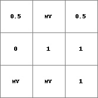
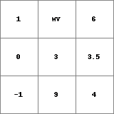
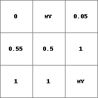
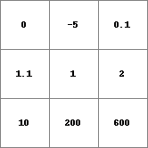

lookuplinear
Assigns table key values with possible interpolation between key values.
Result = lookuplinear(table,expression)
The value of expression is compared to the values of the search key (first column) of the table and is assigned the value of the corresponding record (second column) on the same row if the expression matches the value of the search key. If the value of expression lies between two values of the search key of the table a linear interpolation is executed between the two corresponding records. The interpolation is executed according to the formula:
Result = ((expression – lowerKey) / (upperKey – lowerKey)) * (lowerRecord – upperRecord) + lowerRecord
If the cell value of the expression lies outside the range of the search key a missing value is assigned. If a cell of the expression has a missing value a missing value is assigned to the result. The search key values of the table should be in ascending order or missing values are assigned to all cells of Result.
| Result1.map | Table.txt | Expr.map |
|  | 0 0
2 1
5 1
7 0
|
 |
| Result2.map | Table2.txt | Expr2.map |
|  | 0 0
2 1
500 1
|
 |